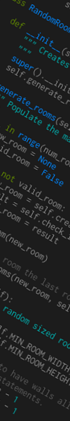

|

|
About
My full name is Kayman Johannes Brusse.
I very much enjoy school, especially courses in maths,
logic and theoretical computer science. I am
focused on learning everything I can and want to make the
most of the time I have there.
My other hobbies are athletics, reading and the wild outdoors.
I am big fan of hiking and canoeing, and while I am in the city
I do my best to bike everywhere I go. I read mostly
fiction, and if you're looking for a recomendation
this is the best book I have read in a long time.
Back
|